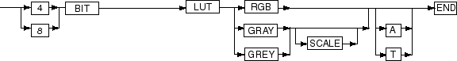
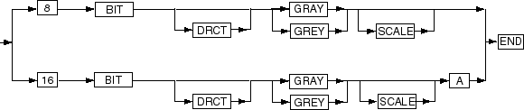
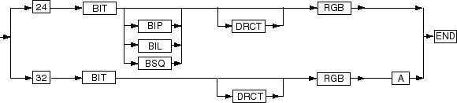

D Oracle Multimedia Image Processing
There are several possible processing operations, and a large number of command options, used for processing Oracle Multimedia images.
D.1 Common Concepts for Image Processing
Some concepts are common to all image operations of the ORDIMAGE process( ) and processCopy( ) methods, and to the image processing procedures and functions in the ORD_IMAGE package.
See Oracle Multimedia ORDImage Object Type for reference information about the process() and processCopy methods. See Oracle Multimedia ORD_IMAGE PL/SQL Package for reference information about the image processing procedures and functions in the ORD_IMAGE package.
See Also:
Image File and Compression Formats for Use with Oracle Multimedia for information about supported image file formats and image compression formats
D.1.1 Source and Destination Images
Image processing methods and procedures operate on one image, called the source image, and produce another image, called the destination image.
In the case of the process( ) method, the destination image is written into the same storage space as the source image, replacing it permanently. For the processCopy( ) method, the storage for the destination image is distinct from the storage for the source image.
Similarly, for image processing procedures in the ORD_IMAGE package that accept both source and destination arguments, the storage for the destination image is distinct from the storage for the source image. For image processing procedures in the ORD_IMAGE package that accept only a single image parameter, the destination image is written into the same storage space as the source image, replacing it permanently.
D.1.2 process( ) and processCopy( )
The process( ) and processCopy( ) methods and procedures are functionally identical except for the fact that the process( ) method writes its output into the same BLOB from which it takes its input, while the processCopy( ) method writes its output into a different BLOB. Their command string options are identical.
For the rest of this discussion, the names process( ) and processCopy( ) are used interchangeably, and the use of the name process( ) implies both process( ) and processCopy( ), unless explicitly noted otherwise.
D.1.3 Operator and Value
Unless otherwise noted, the process( ) operators appear in the command string in the form <operator> = <value>. The right-hand side of the expression is called the value of the operator, and determines how the operator is to be applied.
D.1.4 Combining Operators
In general, any number of operators can be combined in the command string passed into the process( ) method or procedure if the combination makes sense. However, certain operators are supported only if other operators are present or if other conditions are met. For example, the compressionQuality operator is supported only if the compression format of the destination image is JPEG. Other operators require that the source or destination image be a Raw Pixel or foreign image.
The flexibility in combining operators enables a single operation to change the format of an image, reduce or increase the number of colors, compress the data, and cut or scale the resulting image. This is highly preferable to making multiple calls to do each of these operations sequentially.
D.1.5 Types of Image Operators
Oracle Multimedia supports three basic types of image operators: image formatting operators, image processing operators, and format-specific operators. Table D-1 lists the operators and identifies them as one of the three types.
Table D-1 Supported Image Operators and Types
| Name | Type |
|---|---|
|
Format-specific |
|
|
Image formatting |
|
|
Image formatting |
|
|
Image formatting |
|
|
Image processing |
|
|
Image processing |
|
|
Image formatting |
|
|
Image processing |
|
|
Image processing |
|
|
Format-specific |
|
|
Image processing |
|
|
Image processing |
|
|
Image processing |
|
|
Format-specific |
|
|
Image processing |
|
|
Image processing |
|
|
Scaling Operators: |
Image processing |
|
Format-specific |
|
|
Image processing |
|
|
Image processing |
|
|
Image processing |
D.1.6 Addressing Globalization Support Issues
This example demonstrates how to address issues related to globalization support. It shows how to use the process( ) method with language settings that use the comma as the decimal point. For example, when the territory is FRANCE, the decimal point is expected to be a comma. Thus,",75" is specified as the scale factor.
See Also:
process( ) and processCopy( ) for more information about ensuring the correct globalization support interpretation when using the process( ) method
Example D-1 Address a Globalization Support Issue
-- globalization.sql
--
ALTER SESSION SET NLS_LANGUAGE = FRENCH;
ALTER SESSION SET NLS_TERRITORY = FRANCE;
DECLARE
myimage ORDImage;
BEGIN
SELECT image into myimage from image_table where id=1 for update;
myimage.process('scale=",75"');
UPDATE image_table SET image = myimage where id=1;
COMMIT;
END;
/
D.2 Image Formatting Operators
At the most abstract level, the image formatting operators are used to change the layout of the data within the image storage. They do not change the semantic content of the image, and unless the source image contains more information than the destination image can store, they do not change the visual appearance of the image at all. Examples of a source image with more information than the destination image can store are:
-
Converting a 24-bit image to an 8-bit image (too many bits per pixel)
-
Converting a color image to a grayscale or monochrome image (too many color planes)
-
Converting an uncompressed image, or an image stored in a lossless compression format, to a lossy compression format (too much detail)
The following subsections describe these image formatting operators:
D.2.1 fileFormat
The fileFormat operator determines the image file type, or format, of the output image. The value of this operator is a 4-character code, which is a mnemonic for the new file format name. The list of allowable values for the image fileFormat operator is shown in Table 10-1. Image File and Compression Formats for Use with Oracle Multimedia contains basic information about each file format, including its mnemonic (file format), typical file extension, allowable compression and content formats, and other notable features.
The value given to the fileFormat operator is the single most important detail when specifying the output for process( ). This value determines the range of allowable content and compression formats, whether compression quality is useful, and whether the format-specific operators is useful.
If the fileFormat operator is not used in the process( ) command string, Oracle Multimedia determines the file format of the source image and uses that as the default file format value. If the file format of the source image does not support output, an error occurs. If the source image is a foreign image, the output image is written as Raw Pixel.
D.2.2 contentFormat
The contentFormat operator determines the format of the image content. The content means the number of colors supported by the image and the manner in which they are supported. Depending on which file format is used to store the output image, some or most of the content formats may not be supported.
Image content formats fall into two broad categories, as follows:
-
Direct color (DRCT) images
In direct color images, the pixel data indicate color values directly, without reference to any additional information. This category includes monochrome images (pure black and white), grayscale images (shades of gray) and RGB (true color) images.
In direct color images, the bit depth of the image indicates the size of the pixel data; monochrome images are implicitly 1 bit deep, grayscale images are 8 bits deep, or 16 if an optional 8-bit alpha channel is present, and RGB images are 24 bits deep -- usually 8 bits each for red, green, and blue, or 32 bits deep if an optional 8-bit alpha channel is present.
-
Lookup table (LUT) images
LUT images (also referred to as indexed color images) store possible color values in a table of possible color combinations, and pixel data then indicate which possible color from the table is to be used.
The bit depth of a LUT image indicates both the size of the pixel data and the number of possible colors in the lookup table. A 1-bit LUT image would have 1-bit pixels and 2 possible colors (2^1), a 4-bit image would have 16 (2^4) possible colors, and an 8-bit image would have 256 (2^8) possible colors. Typically, the color table uses 24 bits to represent the possible colors, so although only 16 colors might be available in an image, they could each be any of up to 16 million possible RGB combinations. If the LUT image supports an alpha channel, then the table usually uses 32 bits to represent each color.
If the contentFormat operator is not passed to the process( ) method or procedure, then Oracle Multimedia attempts to duplicate the content format of the source image if it is supported by the file format of the destination image. Otherwise, a default content format is chosen depending on the destination file format.
These figures illustrate the syntax and options for the contentFormat operator.
Figure D-1 illustrates the contentFormat syntax that you use to convert an image to monochrome.
For finer control of the image output when you convert an image to monochrome, use the quantize operator with the ERRORDIFFUSION, ORDEREDDITHER, or THRESHOLD value. See quantize for information about the quantize operator.
Figure D-1 Syntax Diagram for MONOCHROME contentFormat
Description of "Figure D-1 Syntax Diagram for MONOCHROME contentFormat "
Figure D-2 illustrates the contentFormat syntax that you use to convert an image to LUT format.
The bit depth portion of the contentFormat syntax determines how many colors are present in the LUT of the final image, as follows:
-
An 8-bit image can contain up to 256 colors.
-
A 4-bit image can contain up to 16 colors.
-
A 1-bit image can contain only 2 colors, however, each of these colors can be any 24-bit RGB value.
The color portion of the contentFormat syntax controls whether the resulting image is composed of RGB triplets or grayscale values. There is no difference between GRAY and GREY, and the optional SCALE suffix has no functional effect.
The A and T portion of the contentFormat syntax provides the ability to preserve alpha (A) or transparency (T) values in an image. You cannot use the transparency syntax to reduce a 32-bit image to an 8-bit image with alpha or transparency, but you can use it to preserve alpha or transparency when converting an image to a different file format. You can also use it to convert a transparency effect into a full alpha effect (however, only the transparent index has alpha in the output).
For finer control of the image output when you convert a direct color image to a LUT color image, use the quantize operator with the ERRORDIFFUSION, ORDEREDDITHER, or MEDIANCUT value. See quantize for information about the quantize operator.
Figure D-2 Syntax Diagram for LUT contentFormat
Description of "Figure D-2 Syntax Diagram for LUT contentFormat"
Figure D-3 illustrates the contentFormat syntax that you use to convert an image to grayscale.
The bit depth portion of the contentFormat syntax determines the overall type of the grayscale image: an 8-bit grayscale image may not have an alpha channel, while a 16-bit grayscale image currently must have an alpha channel. In either case, the DRCT specification is optional, because any non-LUT image is always direct color. There is no difference between GRAY and GREY, and the optional SCALE suffix has no functional effect. The alpha specification (A) is required for 16-bit grayscale output, and can be used to either preserve an existing alpha channel in a currently grayscale image or reduce a 32-bit RGBA image to grayscale with alpha.
The quantize operator has no effect on conversions to grayscale.
Figure D-3 Syntax Diagram for GRAYSCALE contentFormat
Description of "Figure D-3 Syntax Diagram for GRAYSCALE contentFormat"
Figure D-4 illustrates the contentFormat syntax that you use to convert an image to direct color.
The bit depth portion of the contentFormat syntax determines the overall type of the direct RGB image: a 24-bit RGB image does not have an alpha channel, while a 32-bit RGB image must always have an alpha channel. In either case, the DRCT specification is optional because any non-LUT image is always direct color. The alpha specification (A) is required for 32-bit RGB output; it preserves an existing alpha channel in a 32-bit or 64-bit RGB image, and it preserves the alpha channel in a 16-bit grayscale image that is being promoted to RGB.
The optional pixel chunking syntax enables images to be forced to band-interleaved-by-pixel (BIP, also known as chunky), band-interleaved-by-line (BIL), or band-interleaved-by-plane (BSQ, also known as band-sequential or planar). This portion of the syntax is supported only for RPIX formats.
The quantize operator is not used for conversions to direct color.
Figure D-4 Syntax Diagram for Direct RGB contentFormat
Description of "Figure D-4 Syntax Diagram for Direct RGB contentFormat"
This list of examples provides some common uses of the contentFormat operator:
-
To specify that the output image be monochrome (black and white only):
image1.process('contentFormat=monochrome'); -
To specify that the output image be an RGB lookup table (indexed color), either of the following is valid:
image1.process('contentFormat=8bitlutrgb'); image1.process('contentFormat=8bitlut'); -
To specify that the output image be a grayscale lookup table (indexed color):
image1.process('contentFormat=8bitlutgray'); -
To specify that the output image be grayscale, either of the following is valid:
image1.process('contentFormat=8bitgray'); image1.process('contentFormat=8bitgreyscale'); -
To specify that the output image be direct color, either of the following is valid:
image1.process('contentFormat=24bitrgb'); image1.process('contentFormat=24bitdrctrgb'); -
To specify that the output image be direct color and band sequential:
image1.process('contentFormat=24bitbsqrgb');
D.2.3 compressionFormat
The compressionFormat operator determines the compression algorithm used to compress the image data. The range of supported compression formats depends heavily upon the file format of the output image. Some file formats support only a single compression format, and some compression formats are supported only by one file format.
The supported values for the compressionFormat operator are listed in Table 10-1.
All compression formats that include RLE in their mnemonic are run-length encoding compression schemes, and work well only for images that contain large areas of identical color. The PACKBITS compression type is a run-length encoding scheme that originates from the Macintosh system but is supported by other systems. It has limitations that are similar to other run-length encoding compression formats. Formats that contain LZW or HUFFMAN compression types are more complex compression schemes that examine the image for redundant information and are more useful for a broader class of images. FAX3 and FAX4 are the CCITT Group 3 and Group 4 standards for compressing facsimile data and are useful only for monochrome images. All the compression formats mentioned in this paragraph are lossless compression schemes, which means that compressing the image does not discard data. An image that is compressed into a lossless format and then decompressed looks the same as the original image.
The JPEG compression format is a special case. Developed to compress photographic images, the JPEG format is a lossy format, which means that it compresses the image typically by discarding unimportant details. Because this format is optimized for compressing photographic and similarly noisy images, it often produces poor results for other image types, such as line art images and images with large areas of similar color. JPEG is the only lossy compression scheme currently supported by Oracle Multimedia.
The DEFLATE compression type is ZIP Deflate and is used by PNG image file formats. The DEFLATE-ADAM7 compression format is interlaced ZIP Deflate and is used by PNG image file formats. The ASCII compression type is ASCII encoding and the RAW compression type is binary encoding, and both are for PNM image file formats.
If the compressionFormat operator is not specified and the file format of the destination image is either the same as that of the source image or not specified, and if the content format of the destination image is either the same as that of the source image or not specified, then the compression format of the destination image is the same as the source image.
If the compressionFormat operator is not specified and the file format of the destination image is different from that of the source image, then a default compression format is selected depending on the destination image file format. This default compression format is often "None" or "No Compression."
D.2.4 compressionQuality
The compressionQuality operator determines the relative quality of an image compressed with a lossy compression format. This operator has no meaning for lossless compression formats, and therefore is not currently supported for any compression format except JPEG. File formats that support JPEG compression include JFIF, TIFF, and PICT.
The compressionQuality operator accepts five values, ranging from the most compression (lowest visual quality) to the least compression (highest visual quality): MAXCOMPRATIO, HIGHCOMP, MEDCOMP, LOWCOMP, and MAXINTEGRITY. Using the MAXCOMPRATIO value results in the smallest amount of image data, but may introduce visible aberrations. Using the MAXINTEGRITY value keeps the resulting image more faithful to the original, but requires more space to store. The compressionQuality operator also accepts integer values between 0 (lowest quality) and 100 (highest quality) for JFIF and TIFF file formats only.
The default values for the compressionQuality operator are LOWCOMP for the JFIF and TIFF file formats and MAXINTEGRITY for the PICT file format.
D.3 Image Processing Operators
The image processing operators supported by Oracle Multimedia directly change the way the image looks on the display. The operators supported by Oracle Multimedia represent only a fraction of all possible image processing operations, and are not intended for users performing intricate image analysis.
The following subsections describe these image processing operators:
D.3.1 contrast
The contrast operator is used to adjust contrast. You can adjust contrast by percentage or by upper and lower bound, as follows:
-
By percentage
To adjust contrast by percentage, the syntax is as follows:
contrast = <percent1> [<percent2> <percent3>]
One or three parameters can be specified when specifying contrast by percentage. If one value is passed, then it is applied to all color components (either gray, or red, green, and blue) of the input image. If three values are specified then percent1 is applied to the red component of the image, percent2 to the green component, and percent3 to the blue component.
The percent values are floating-point numbers that indicate the percentage of the input pixel values that are mapped onto the full available output range of the image; the remaining input values are forced to either extreme (zero or full intensity). For example, a percentage of 60 indicates that the middle 60% of the input range is to be mapped to the full output range of the color space, while the lower 20% of the input range is forced to zero intensity (black for a grayscale image) and the upper 20% of the input range is forced to full intensity (white for a grayscale image).
-
By upper and lower bound
To adjust contrast by lower and upper bound, the syntax is as follows:
contrast = <lower1> <upper1> [<lower2> <upper2> <lower3> <upper3>]
The lower and upper values are integers that indicate the lower and upper bounds of the input pixel values that are to be mapped to the full output range. Values less than the lower bound are forced to zero intensity, and values greater than the upper bound are forced to full intensity. For 8-bit grayscale and 24-bit RGB images, these bounds can range from 0 to 255.
Two or six values can be specified when using this contrast mode. If two values are specified, then those bounds are used for all color components of the image. If six values are specified, then lower1 and upper1 are applied to the red component of the image, lower2 and upper2 are applied to the green component, and lower3 and upper3 are applied to the blue component.
Note:
Enclose all floating-point arguments with double quotation marks (
"") to ensure correct Globalization Support interpretation.
D.3.2 cut
The cut operator is used to create a subset of the original image. The values supplied to the cut operator are the origin coordinates (x,y) of the cut window in the source image, and the width and height of the cut window in pixels. This operator is applied before any scaling that is requested.
If the cut operator is not supplied, the entire source image is used.
D.3.4 gamma
The gamma operator corrects the gamma (brightness) of an image. This operator accepts either one or three floating-point values using this syntax:
gamma = <gamma1> [<gamma2> <gamma3>]
The values gamma1, gamma2, and gamma3 are the denominators of the gamma exponent applied to the input image. If only one value is specified, then that value is applied to all color components (either gray, or red, green, and blue) of the input image. If three values are specified then gamma1 is applied to the red component of the image, gamma2 to the green component, and gamma3 to the blue component.
To brighten an image, specify gamma values greater than 1.0; typical values are in the range 1.0 to 2.5. To darken an image, specify gamma values smaller than 1.0 (but larger than 0).
Note:
Enclose all floating-point arguments with double quotation marks ("") to ensure correct Globalization Support interpretation.
D.3.8 quantize
The quantize operator affects the outcome of the contentFormat operator when you change the bit depth of an image. When an explicit change in content format is requested, or when the content format has to be changed due to other requested operations (such as scaling a LUT image, which requires promotion to direct color before scaling, or converting to a file format that only supports LUT images), the quantize operator indicates how to perform any resulting quantization (reduction in number of colors).
The value of the quantize operator can be any one of these quantizers:
-
ERRORDIFFUSION
You can use the ERRORDIFFUSION quantizer in 2 ways: to reduce an 8-bit grayscale image to a monochrome image, or to reduce a 24-bit RGB image to an 8-bit LUT image.
The ERRORDIFFUSION quantizer retains the error resulting from the quantization of an existing pixel and diffuses that error among neighboring pixels. This quantization uses a fixed color table. The result looks good for most photographic images, but creates objectionable speckling artifacts for synthetic images. The artifacts are due to the fixed color lookup table used by the existing quantization method, which is statistically well balanced across the entire RGB color space, but is often a poor match for an image that contains many intensities of just a few colors. The result is more accurate than when the ORDEREDDITHER quantizer is specified; however, it is returned more slowly.
This is the default quantization value.
-
ORDEREDDITHER
You can use the ORDEREDDITHER quantizer in 2 ways: to reduce an 8-bit grayscale image to a monochrome image, or to reduce a 24-bit RGB image to an 8-bit LUT image.
The ORDEREDDITHER quantizer finds the closest color match for each pixel in a fixed color table and then dithers the result to minimize the more obvious effects of color substitution. The result is satisfactory for most images, but fine details may be lost in the dithering process. Although the result is not as accurate as when the ERRORDIFFUSION quantizer is specified, it is returned more quickly.
-
THRESHOLD <threshold>
The THRESHOLD quantizer reduces 8-bit grayscale images to monochrome images.
The THRESHOLD quantizer assigns a monochrome output value (black or white) to a pixel by comparing that pixel's grayscale value to the threshold argument that is supplied along with the quantizer. If the input grayscale value is greater than or equal to the supplied threshold argument, then the output is white, otherwise the output is black. For an 8-bit grayscale or 24-bit RGB image, a grayscale value of 255 denotes white, while a grayscale value of 0 denotes black.
For example, a threshold argument of 128 causes any input value less than 128 to become black, while the remainder of the image becomes white. A threshold value of 0 causes the entire image to be white, and a value of 256 causes the entire image to be black (for an 8-bit grayscale or a 24-bit RGB input image).
The THRESHOLD quantizer is most appropriately applied to synthetic images. The ERRORDIFFUSION and ORDEREDDITHER quantizers produce better output when converting photographic images to monochrome, but result in fuzziness in synthetic images; using the THRESHOLD quantizer eliminates this fuzziness at the cost of the ability to discriminate between various intensities in the input image.
-
MEDIANCUT [optional sampling rate]
The MEDIANCUT quantizer reduces 24-bit RGB images to 8-bit LUT images.
The MEDIANCUT quantizer generates a more optimal color table than the ERRORDIFFUSION or ORDEREDDITHER quantizers for some images, including most synthetic images, by choosing colors according to their popularity in the original image. However, the analysis of the original image is time consuming for large images, and some photographic images may look better when quantized using ERRORDIFFUSION or ORDEREDDITHER.
The MEDIANCUT quantizer accepts an optional integer argument that specifies the sampling rate to be used when scanning the input image to collect statistics on color use. The default value for this quantizer argument is 1, meaning that every input pixel is examined, but any value greater than 1 can be specified. For a sampling rate n greater than 1, 1 pixel out of every n pixels is examined.
These examples demonstrate how to specify values and arguments for the quantize operator:
image.process('contentformat=8bitlutrbg quantize = mediancut 2');
image.process('contentformat=monochrome quantize = threshold 128');D.3.9 rotate
The rotate operator rotates an image within the image plane by the angle specified.
The value specified must be a floating-point number. A positive value specifies a clockwise rotation. A negative value for the operator specifies a counter-clockwise rotation. After the rotation, the image content is translated to an origin of 0,0 and the pixels not covered by the rotated image footprint are filled with the resulting colorspace black value.
Rotation values of 90, 180, and 270 use special code that quickly copies pixels without geometrically projecting them, for faster operation.
Note:
Enclose all floating-point arguments with double quotation marks ("") to ensure correct Globalization Support interpretation.
D.3.10 Scaling Operators
Oracle Multimedia supports several operators that change the scale of an image, as described in the following sections.
D.3.10.1 fixedScale
The fixedScale operator is intended to simplify the creation of images with a specific size, such as thumbnail images. The scale, xScale, and yScale operators all accept floating-point scaling ratios, while the fixedScale (and maxScale) operators specify scaling values in pixels.
The two integer values supplied to the fixedScale operator are the desired dimensions (width and height) of the destination image. The supplied dimensions can be larger or smaller (or one larger and one smaller) than the dimensions of the source image.
The scaling method used by this operator is the same as the scaling method used by the scale operator in all cases. This operator cannot be combined with other scaling operators.
D.3.10.2 maxScale
The maxScale operator is a variant of the fixedScale operator that preserves the aspect ratio (relative width and height) of the source image. The maxScale operator also accepts two integer dimensions, but these values represent the maximum value of the appropriate dimension after scaling. The final dimension can actually be less than the supplied value.
Like the fixedScale operator, this operator is also intended to simplify the creation of images with a specific size. The maxScale operator is even better suited to thumbnail image creation than the fixedScale operator because thumbnail images created using the maxScale operator has the same aspect ratio as the original image.
The maxScale operator scales the source image to fit within the dimensions specified while preserving the aspect ratio of the source image. Because the aspect ratio is preserved, only one dimension of the destination image can actually be equal to the values supplied to the operator. The other dimension can be smaller than, or equal to, the supplied value. Another way to think of this scaling method is that the source image is scaled by a single scale factor that is as large as possible, with the constraint that the destination image fit entirely within the dimensions specified by the maxScale operator.
If the cut operator is used with the maxScale operator, then the aspect ratio of the cut window is preserved instead of the aspect ratio of the input image.
The scaling method used by this operator is the same as used by the scale operator in all cases. This operator cannot be combined with other scaling operators.
D.3.10.3 scale
The scale operator enlarges or reduces the image by the ratio given as the value for the operator. If the value is greater than 1.0, then the destination image is scaled up (enlarged). If the value is less than 1.0, then the output is scaled down (reduced). A scale value of 1.0 has no effect, and is not an error. No scaling is applied to the source image if the scale operator is not passed to the process( ) method.
There are two scaling techniques used by Oracle Multimedia. The first technique is "scaling by sampling," and is used only if the requested compression quality is MAXCOMPRATIO or HIGHCOMP, or if the image is being scaled up in both dimensions. This scaling technique works by selecting the source image pixel that is closest to the pixel being computed by the scaling algorithm and using the color of that pixel. This technique is faster, but results in a poorer quality image.
The second scaling technique is "scaling by averaging," and is used in all other cases. This technique works by selecting several pixels that are close to the pixel being computed by the scaling algorithm and computing the average color. This technique is slower, but results in a better quality image.
If the scale operator is not used, the default scaling value is 1.0. This operator cannot be combined with other scaling operators.
Note:
Enclose all floating-point arguments with double quotation marks ("") to ensure correct Globalization Support interpretation.
D.3.10.4 xScale
The xScale operator is similar to the scale operator but affects only the width (x-dimension) of the image. The important difference between xScale and scale is that with xScale, scaling by sampling is used whenever the image quality is specified to be MAXCOMPRATIO or HIGHCOMP, and is not dependent on whether the image is being scaled up or down.
This operator can be combined with the yScale operator to scale each axis differently. It cannot be combined with other scaling operators (Scale, fixedScale, maxScale).
Note:
Enclose all floating-point arguments with double quotation marks ("") to ensure correct Globalization Support interpretation.
D.3.10.5 yScale
The yScale operator is similar to the scale operator but affects only the height (y-dimension) of the image. The important difference between yScale and scale is that with yScale, scaling by sampling is used whenever the image quality is specified to be MAXCOMPRATIO or HIGHCOMP, and is not dependent on whether the image is being scaled up or down.
This operator can be combined with the xScale operator to scale each axis differently. It cannot be combined with other scaling operators (scale, fixedScale, maxScale).
Note:
Enclose all floating-point arguments with double quotation marks ("") to ensure correct Globalization Support interpretation.
D.3.11 sharpen
The sharpen operator improves the sharpness of an image. For optimum quality, use this operator with image scaling (see Scaling Operators).
The sharpen operator has this syntax:
sharpen=kernelType gainFactor
kernelType is an integer value that specifies the kernel type, which operates as a low-pass filter in image sharpening. The following table shows the valid kernelType values and their meanings:
Table D-2 List of kernelType Values
| kernelType Value | Description |
|---|---|
|
|
Average kernel |
|
|
Laplacian kernel |
|
|
Enhanced Laplacian kernel |
The higher the kernelType value, the more enhanced the edges of the image become and the sharper the image appears. However, the noise level may increase.
gainFactor is a floating-point value that specifies the gain factor used in image sharpening. The higher the gainFactor value, the more enhanced the edges of the image become and the sharper the image appears. However, the noise level may increase.
The arguments kernelType=0 and gainFactor =2.0 in the following examples produce good results:
image.process('maxScale=200 200, sharpen=0 "2.0"');
image.process('sharpen=0 "2.0"');
You can experiment with different values for these arguments to determine the combinations that result in the best images for your application.
Note:
Enclose all floating-point arguments with double quotation marks ("") to ensure correct Globalization Support interpretation.
D.3.13 transparencyFillColor
The transparencyFillColor operator fills the transparent regions of PNG image file formats with color. This operator can be used with or without other image processing operators.
This operator accepts either the string value for a valid color or the triple integer RGB values for a valid color. The following table shows the valid values for the transparencyFillColor operator:
Table D-3 Valid Values for the transparencyFillColor Operator
| String Value | RGB Value |
|---|---|
|
|
|
|
|
|
|
|
|
|
|
|
|
|
|
|
|
|
|
|
|
|
|
|
|
|
|
|
|
|
|
|
|
|
|
|
|
|
|
Both of the following examples fill the transparent regions of the image with the color red:
image.process('transparencyFillColor=red');
image.processCopy('transparencyFillColor=255 0 0');D.4 Format-Specific Operators
The following operators are supported only when the destination image file format is Raw Pixel or BMPF (scanlineOrder operator only), except the inputChannels operator, which is supported only when the source image is Raw Pixel or a foreign image. It does not matter if the destination image format is set to Raw Pixel or BMPF explicitly using the fileFormat operator, or if the Raw Pixel or BMPF format is selected by Oracle Multimedia automatically, because the source format is Raw Pixel, BMPF, or a foreign image.
The following subsections describe these format-specific operators:
D.4.1 channelOrder
The channelOrder operator determines the relative order of the red, green, and blue channels (bands) within the destination Raw Pixel image. The order of the characters R, G, and B within the mnemonic value passed to this operator determine the order of these channels within the output. The header of the Raw Pixel image is written such that this order is not lost.
See Image Raw Pixel Format for Use with Oracle Multimedia for more information about the Raw Pixel file format and the ordering of channels in that format.
D.4.2 pixelOrder
The pixelOrder operator controls the direction of pixels within a scanline in a Raw Pixel Image. The value Normal indicates that the leftmost pixel of a scanline appears first in the image data stream. The value Reverse causes the rightmost pixel of the scanline to appear first.
See Image Raw Pixel Format for Use with Oracle Multimedia for more information about the Raw Pixel file format and pixel ordering.
D.4.3 scanlineOrder
The scanlineOrder operator controls the order of scanlines within a Raw Pixel or BMPF image. The value Normal indicates that the top display scanline appears first in the image data stream. The value Inverse causes the bottom scanline to appear first. For BMPF, scanlineOrder = inverse is the default and ordinary value.
See Image Raw Pixel Format for Use with Oracle Multimedia for more information about the Raw Pixel or BMPF file format and scanline ordering.
D.4.4 inputChannels
As stated in Format-Specific Operators, the inputChannels operator is supported only when the source image is in Raw Pixel format, or if the source is a foreign image.
The inputChannels operator assigns individual bands from a multiband image to be the red, green, and blue channels for later image processing. Any band within the source image can be assigned to any channel. If desired, only a single band can be specified and the selected band is used as the grayscale channel, resulting in a grayscale output image. The first band in the image is number 1, and the band numbers passed to the Input Channels operator must be greater than or equal to one, and less than or equal to the total number of bands in the source image. Only the bands selected the by inputChannels operator are written to the output. Other bands are not transferred, even if the output image is in Raw Pixel format.
Every Raw Pixel or foreign image has these input channel assignments written into its header block, but this operator overrides those default assignments.
See Image Raw Pixel Format for Use with Oracle Multimedia for more information about the Raw Pixel file format and input channels.
D.5 CMYK Image Processing
The process( ) and processCopy( ) methods and procedures are supported for TIFF and JFIF images with pixel data stored in the CMYK content format. All processing operators including cut, scale, and rotate are supported for CMYK images. During processing, CMYK data is converted to standard RGB, according to these standard formulas.
For 32-bit CMYK images:
R = 255*(1-K/255)*(1-C/255) G = 255*(1-K/255)*(1-M/255) B = 255*(1-K/255)*(1-Y/255)
For 64-bit CMYK images:
R = 65535*(1-K/65535)*(1-C/65535) G = 65535*(1-K/65535)*(1-M/65535) B = 65535*(1-K/65535)*(1-Y/65535)
See Image File and Compression Formats for Use with Oracle Multimedia for information about I/O support for images in CMYK content format.
D.6 Watermarking Operations
Oracle Multimedia supports adding watermarks to source images. Watermarks can contain images or text – for example, corporate logos, copyrights, or digital signatures. With this feature, watermarking can be enforced by the database.
Watermarking is commonly used to prevent misuse of copyrighted or trademarked images. Thus, you might want to add a watermark to your images before posting them on a Web site or other public forum. A watermark that identifies you as the owner of the images can prevent their unauthorized use.
The following subsections describe these watermarking topics in more detail:
See Also:
-
Oracle Multimedia ORD_IMAGE PL/SQL Package for reference information about the applyWatermark( ) procedures
-
Oracle Multimedia ORDImage Object Type for reference information about the applyWatermark( ) methods
D.6.1 Adding Image Watermarks
For an image watermark, you can specify properties such as the location within a source image (either as the relative position to the source image or as X and Y coordinates), the width and height of the frame, and the transparency.
For example, to specify an image watermark to be displayed in the top left corner of an image, use this syntax:
prop := ordsys.ord_str_list(
'position=topleft');
To specify the size of the frame (in pixels) and the transparency of the image watermark, use this syntax:
prop := ordsys.ord_str_list(
'width=100',
'height=80',
'transparency=0.2');
See Also:
-
Watermark Properties for a complete list of watermark properties
-
ORD_IMAGE PL/SQL Package: applyWatermark( ) image for BFILEs and ORD_IMAGE PL/SQL Package: applyWatermark( ) image for BLOBs for reference information about the PL/SQL API procedures to use for adding image watermarks
-
applyWatermark( ) image for reference information about the object method to use for adding image watermarks
D.6.2 Adding Text Watermarks
For a text watermark, you can specify properties such as the location within the source image, the width and height of the frame (which also controls text wrapping and truncation), and the font size, style, color, and transparency of the text.
For example, to specify a copyright text watermark for Oracle Multimedia to be displayed at the X and Y coordinates of 100, in the font Times New Roman and the style Italic, with 0.6 transparency, use this syntax:
added_text := 'Oracle Multimedia © 2009';
-- specify properties
prop := ordsys.ord_str_list(
'font_name=Times New Roman',
'font_style=italic',
'position_x=100',
'position_y=100',
'transparency=0.6');
See Also:
-
Watermark Properties for a complete list of watermark properties
-
ORD_IMAGE PL/SQL Package: applyWatermark( ) text for BFILEs and ORD_IMAGE PL/SQL Package: applyWatermark( ) text for BLOBs for reference information about the PL/SQL API procedures to use for adding text watermarks
-
applyWatermark( ) text for reference information about the object method to use for adding text watermarks
D.6.3 Watermark Properties
Watermark properties are defined as name-value pairs. Table D-4 describes these properties and lists the valid values for each property.
Table D-4 Watermark Properties and Valid Values
| Name | Description | Values |
|---|---|---|
|
font_name |
The name of the font to use for the watermark text |
Valid values: The name of any font that is valid for your system. The default is |
|
font_style |
The style of the font to use for the watermark text |
Valid values: |
|
font_size |
The size of the font to use for the watermark text |
Valid values: A positive integer. The default is |
|
text_color |
The color to use for the watermark text |
Valid values: |
|
text_color_red, text_color_green, text_color_blue |
The red, green, and blue channels of color to use for the watermark text |
Valid values: An integer between Note: You must specify all three properties at the same time. A valid specification of these three properties overrides a valid specification of the text_color property. |
|
position |
The relative position of the watermark in the source image |
Valid values: |
|
position_x, position_y |
The x and y coordinates for the position of the watermark in the source image |
Valid values: Positive integers. The default is Note: You must specify both properties at the same time. A valid specification of these two properties overrides a valid specification of the position property. |
|
transparency |
The transparency of the watermark in the source image |
Valid values: A floating-point number between |
|
width |
The width of the watermark (in pixels) in the source image |
Valid values: A positive integer. The default is the actual width of the watermark. |
|
height |
The height of the watermark (in pixels) in the source image |
Valid values: A positive integer. The default is the actual height of the watermark. Note: To wrap long text within a frame, specify the width and the height of the frame. Text that does not fit within the frame is truncated. |